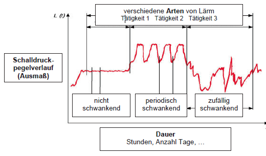

(1) Bei der Messung der Lärmeinwirkung werden alle auf eine Person oder einen bestimmten Ort einwirkenden Schallereignisse erfasst und bewertet. Dabei können sich z. B. die Schallereignisse mehrerer Schallquellen und die Schallreflexionen innerhalb des Raumes aufsummieren. Als wichtigster Kennwert zur Beurteilung der Gehörgefährdung wird in der Regel der Tages-Lärmexpositionspegel bestimmt, der die Lärmeinwirkung für den repräsentativen Arbeitstag beschreibt (siehe Abschnitt 6). Falls betriebsbedingt verursachte, besonders laute Schallimpulse (z. B. Knalle, Explosionen) auftreten können, ist zusätzlich der Spitzenschalldruckpegel LpC,peak zu erfassen.
(2) Die durchzuführenden Messungen können auch eine Stichprobenerhebung umfassen, die für die persönliche Exposition eines Beschäftigten repräsentativ ist.
Hinweis: Die Ermittlung der Lärmeinwirkung ist ausführlich in der Norm DIN EN ISO 9612 erläutert.
(1) Je nach Arbeitsplatzsituation kann es sinnvoll sein, die Lärmeinwirkung personenbezogen oder ortsbezogen zu betrachten und dementsprechend einen personenbezogenen und einen ortsbezogenen Lärmexpositionspegel zu unterscheiden.
(2) Die Ermittlung des ortsbezogenen Lärmexpositionspegels empfiehlt sich z. B. als Grundlage für die Festlegung von Lärmbereichen. Die Anwendung des personenbezogenen Lärmexpositionspegels empfiehlt sich z. B. für Beschäftigte, die bei ihrer Arbeit an verschiedenen Orten kurzzeitig lärmintensive Tätigkeiten ausüben und dadurch möglicherweise gefährdet sind.
Beispiel: Heizungsinstallateure, die auf Baustellen in verschiedenen Räumen die Konsolen für Heizkörper bohren. Da in dem einzelnen Raum nur kurzzeitig eine Lärmeinwirkung besteht, gibt es keine Lärmbereiche (ortsbezogen). Für die Beschäftigten selbst (personenbezogen) kann jedoch eine Gehörgefährdung bestehen.
(1) Die Messung kann entweder personengebunden oder ortsfest durchgeführt werden:
(2) Unabhängig davon, ob eine personenbezogene oder ortsbezogene Beurteilung gefragt ist, kann die Messung ortsfest oder personengebunden durchgeführt werden. Beispielsweise lässt sich die personenbezogene Lärmexposition für einen mobil eingesetzten Beschäftigten entweder durch eine personengebundene Messung mit einem Lärmdosimeter bestimmen oder aus den an verschiedenen Einsatzorten ortsfest gemessenen Geräuschimmissionen berechnen.
(1) Bei der personengebundenen Messung wird das Mikrofon am Körper des zu untersuchenden Beschäftigten befestigt und die Belastung üblicherweise mit Hilfe eines ebenfalls am Körper getragenen Personenschallexposimeters aufgezeichnet. Die personengebundene Messung bietet sich vor allem für mobil eingesetzte Beschäftigte mit vielfältigen unterschiedlichen Tätigkeiten und für die Erfassung der Lärmexposition über eine lange Zeitdauer an.
(2) Die folgende Mikrofonposition ist zu empfehlen: mindestens 10 cm Abstand zum Ohr und 4 cm über der Schulter.
Hinweis: Bei der personengebundenen Erfassung der Lärmexposition mit Hilfe von Schalldosimetern ist zu beachten, dass sich größere Messunsicherheiten ergeben können, z. B. aufgrund von Schallreflexionen und Abschattungen durch den Körper des Beschäftigten. Das gilt insbesondere für hochfrequenten Lärm und kleine Lärmquellen in geringem Abstand zum Ohr. Deshalb erfordert diese Messmethode eine besondere Sorgfalt, eine möglichst genaue Dokumentation der ausgeführten Tätigkeiten und eine spätere Überprüfung der Ergebnisse auf Plausibilität.
(1) In betrieblichen Anwendungsfällen wird häufig mit einem Schallpegelmesser ortsfest gemessen, um die an einem Arbeitsplatz oder in einem bestimmten Bereich gegebene Lärmbelastungssituation zu erfassen und mit entsprechenden Auslösewerten zu vergleichen. Grundsätzlich wird diese Messung in Abwesenheit des Beschäftigten durchgeführt, sodass er das Ergebnis nicht durch Schallreflexionen oder Abschattungseffekte seines Körpers beeinflusst. Das Mikrofon wird dabei an der üblichen Position des Kopfes in Höhe der Augen gehalten und mit der vom Hersteller angegebenen Bezugsrichtung (in der Regel 0°, d. h. senkrecht zur Membrane) in Blickrichtung gerichtet. Als Anhaltswerte für die Mikrofonhöhe gelten folgende Maße:
(2) Falls sich der Beschäftigte an dem Arbeitsplatz aufhalten muss, z. B. um eine Maschine zu bedienen, ist das Mikrofon in Ohrnähe seitlich des Kopfes in einem Abstand von 0,1 m bis 0,4 m zum Ohr zu positionieren. Bei unterschiedlich hoher Belastung beider Ohren, z. B. aufgrund eines einseitig in Ohrnähe gehaltenen Handwerkzeuges, ist die Messung auf der Seite des höher belasteten Ohres durchzuführen.
(3) Erfahrungsgemäß bewegen sich die Beschäftigten an vielen ortsfesten Arbeitsplätzen in einem größeren Bereich, sodass sich eine mittlere Mikrofonposition nicht ohne weiteres festlegen lässt. In solchen Fällen empfiehlt es sich, das Mikrofon von Hand den Bewegungen des Beschäftigten nachzuführen und die daraus resultierenden örtlichen Pegelschwankungen energetisch zu mitteln.
(4) Wenn sich der Beschäftigte bei seiner Arbeit über einen größeren Bereich bewegt, kann es schwierig sein, seine Lärmbelastung mit einem handgehaltenen Schallpegelmesser zu erfassen. Sollte es nicht möglich sein, dabei den Abstand zum Ohr des Beschäftigten von max. 0,4 m einzuhalten, ist die in Abschnitt 5.3.2 beschriebene personengebundene Messung anzuwenden.
Die Messgeräte sind vor und nach einer Messreihe nach der Anleitung des Herstellers zu kalibrieren. Falls die Ergebnisse der Kalibrierungen um mehr als 0,5 dB voneinander abweichen, sind die Messergebnisse ungültig.
(1) Als wesentliche Messgröße ist in der Regel der A-bewertete äquivalente Dauerschallpegel LpAeq zu erfassen und zwar – je nach Messstrategie – für eine einzelne Tätigkeit oder für einen Zeitabschnitt eines Arbeitstages. Der äquivalente Dauerschallpegel LpAeq lässt sich mit Hilfe eines integrierenden Schallpegelmessers bzw. eines Personenschallexposimeters (Lärmdosimeters) erfassen und unmittelbar als Ergebnis ablesen.
(2) Die Messdauer muss nach Art, Ausmaß und Dauer (Abbildung 1) jeweils lang genug sein, um den mittleren Schalldruckpegel der betrachteten Schalleinwirkung zu erfassen, d. h., die Messung muss sich nicht über die gesamte Zeitdauer der betrachteten Schalleinwirkung erstrecken:
(3) Die Messung kann jeweils beendet werden, wenn erkennbar ist, dass sich der angezeigte äquivalente Dauerschallpegel LpAeq durch alle zu erwartenden weiteren Geräuschbeiträge nicht mehr nennenswert ändert.

Abb. 1 Arten, Ausmaß und Dauer der Lärmeinwirkung
Hinweis: Da der Tages-Lärmexpositionspegel LEX,8h aus Messgrößen bestimmt wird, wird die Berechnung des Tages-Lärmexpositionspegels LEX,8h in Abschnitt 6.2.2 dargestellt.
Der Spitzenschalldruckpegel LpC,peak ist zu erfassen, wenn an dem Arbeitsplatz betriebsbedingt verursachte besonders laute Schallimpulse auftreten können, die möglicherweise den unteren Auslösewert von 135 dB(C) erreichen oder überschreiten. Das gilt z. B. für große Schmiedehämmer, Richtarbeiten im Behälterbau, Bolzensetzwerkzeuge oder Waffenlärm.
Hinweis: Zur Bestimmung des Spitzenschalldruckpegels LpC,peak muss das Schallmessgerät auf die Zeitbewertung „peak“ (Spitze) und auf die Frequenzbewertung „C“ eingestellt werden. Viele moderne Schallmessgeräte können diesen Spitzenschalldruckpegel parallel zum äquivalenten Dauerschallpegel LpAeq erfassen und den maximal aufgetretenen Wert speichern.